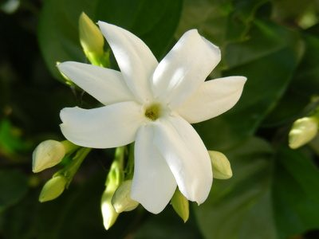
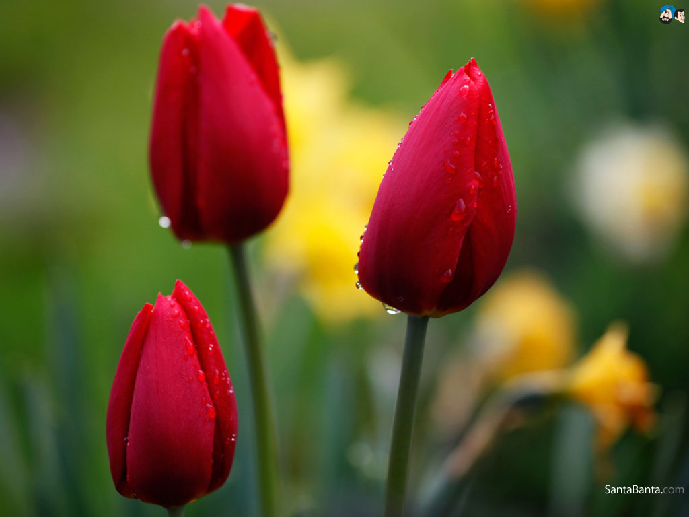

Rose

A rose is a woody perennial flowering plant of the genus Rosa, in the family Rosaceae, or the flower it bears. There are over three hundred species and thousands of cultivars. They form a group of plants that can be erect shrubs, climbing, or trailing, with stems that are often armed with sharp prickles. Flowers vary in size and shape and are usually large and showy, in colours ranging from white through yellows and reds. Most species are native to Asia, with smaller numbers native to Europe, North America, and northwestern Africa. Species, cultivars and hybrids are all widely grown for their beauty and often are fragrant. Roses have acquired cultural significance in many societies. Rose plants range in size from compact, miniature roses, to climbers that can reach seven meters in height. Different species hybridize easily, and this has been used in the development of the wide range of garden roses.
Sampaguita

Jasminum sambac is a species of jasmine native to a small region in the eastern Himalayas in Bhutan and neighbouring Bangladesh, India and Pakistan. It is cultivated in many places, especially across much of South and Southeast Asia. It is naturalised in many scattered locales: Mauritius, Madagascar, the Maldives, Cambodia, Indonesia, Christmas Island, Chiapas, Central America, southern Florida, the Bahamas, Cuba, Hispaniola, Jamaica, Puerto Rico, and the Lesser Antilles.Jasminum sambac is a small shrub or vine growing up to 0.5 to 3 m (1.6 to 9.8 ft) in height. It is widely cultivated for its attractive and sweetly fragrant flowers. The flowers may be used as a fragrant ingredient in perfumes and jasmine tea. It is the national flower of the Philippines, where it is known as sampaguita,[7] as well as being one of the three national flowers of Indonesia, where it is known as melati putih.
Tulips

Tulips (Tulipa) form a genus of spring-blooming perennial herbaceous bulbiferous geophytes (having bulbs as storage organs). The flowers are usually large, showy and brightly coloured, generally red, pink, yellow, or white (usually in warm colours). They often have a different coloured blotch at the base of the tepals (petals and sepals, collectively), internally. Because of a degree of variability within the populations, and a long history of cultivation, classification has been complex and controversial. The tulip is a member of the Liliaceae (lily) family, along with 14 other genera, where it is most closely related to Amana, Erythronium and Gagea in the tribe Lilieae. There are about 75 species, and these are divided among four subgenera. The name "tulip" is thought to be derived from a Persian word for turban, which it may have been thought to resemble. Tulips originally were found in a band stretching from Southern Europe to Central Asia, but since the seventeenth century have become widely naturalised and cultivated. In their natural state they are adapted to steppes and mountainous areas with temperate climates. Flowering in the spring, they become dormant in the summer once the flowers and leaves die back, emerging above ground as a shoot from the underground bulb in early spring